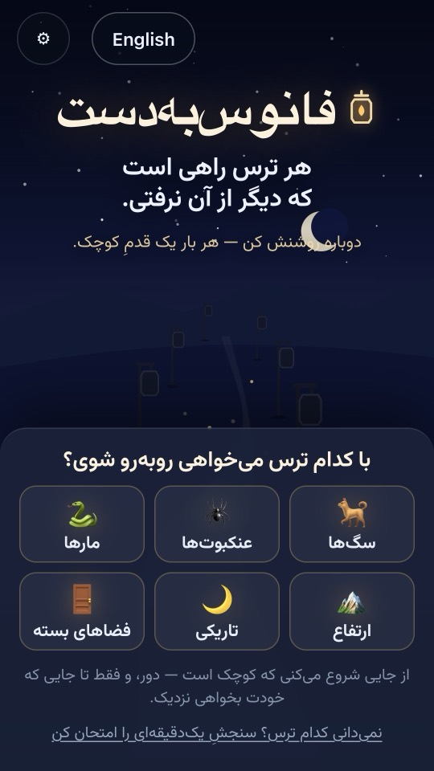
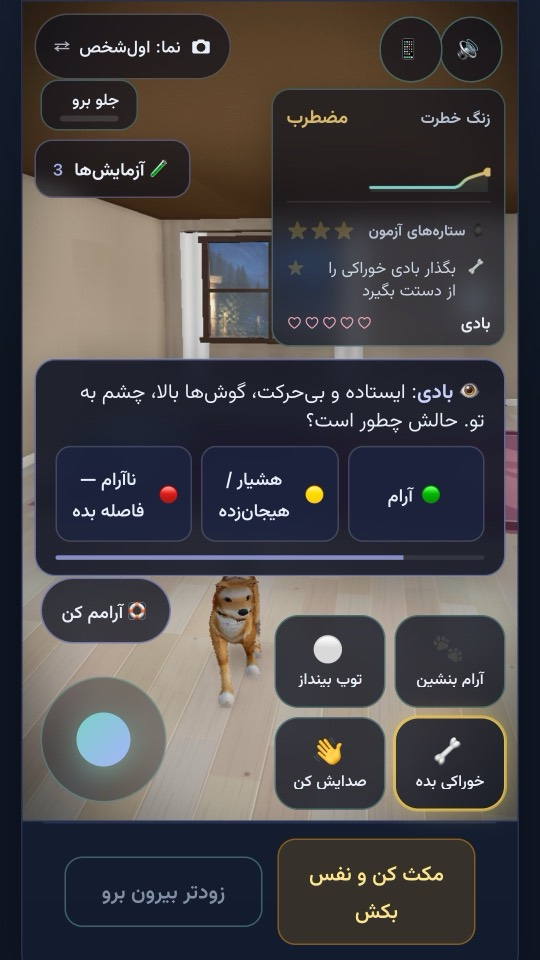
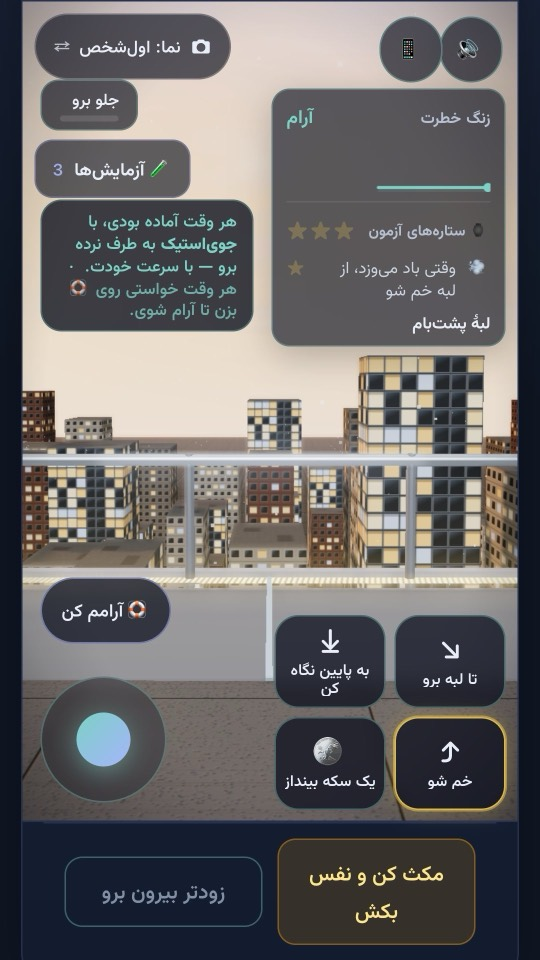
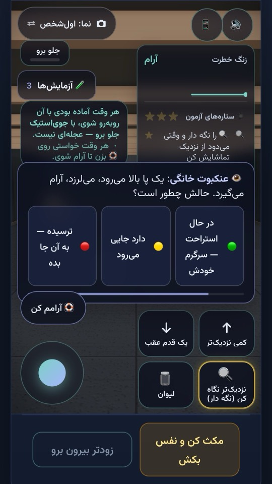
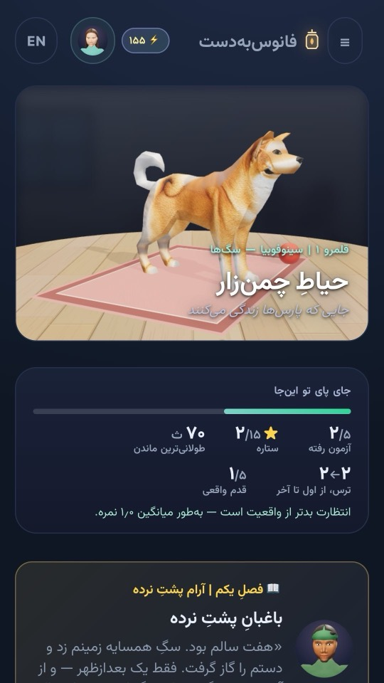
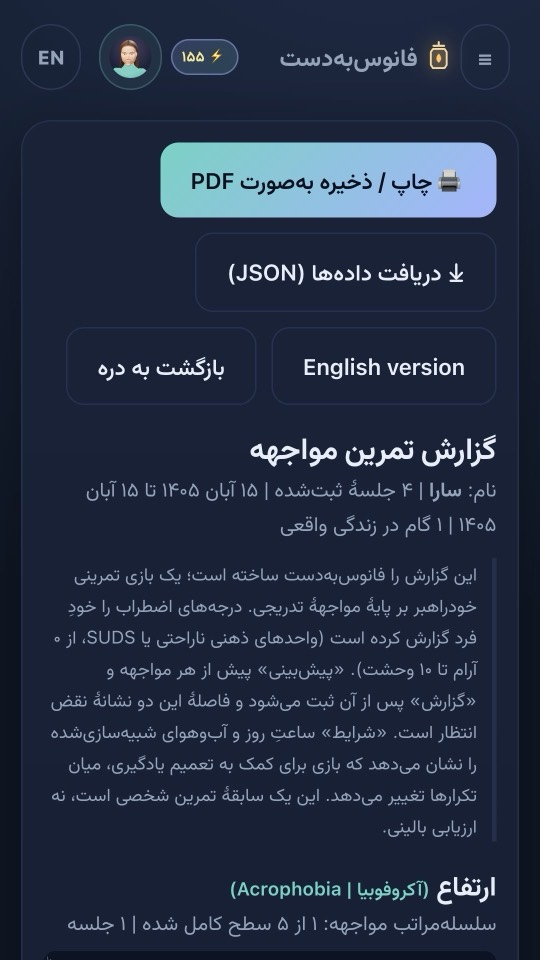

حیاطِ چمنزار
ترس از سگ
از سگی کوچک که آن سرِ اتاق سرگرمِ کار خودش است، تا سگی بزرگ و پرشور که به طرفت میدود. یاد میگیری حالِ سگ را از بدنش بخوانی.
بازی رایگان · فارسی و انگلیسی
هر ترس راهی است که دیگر از آن نرفتی.
دوباره روشنش کن — هر بار یک قدمِ کوچک.
فانوسبهدست بازی سهبعدیِ کوچکی دربارهٔ ترسهای بزرگ است: سگ، عنکبوت، مار، ارتفاع، تاریکی و جای تنگ. با سرعت خودت جلو میروی، هر لحظه که بخواهی بیرون میآیی، و میبینی ترس وقتی بمانی چطور خودش آرام میگیرد.
شش ترس، شش فانوس
هر قلمرو از آسانترین قدم شروع میشود و خودت انتخاب میکنی کی سراغ قدم بعدی بروی. سه قلمرو جانورانی دارند که به حرکت تو واکنش نشان میدهند، و سه قلمرو جاهاییاند که اصلاً حرکت نمیکنند — نکته هم همین است.
ترس از سگ
از سگی کوچک که آن سرِ اتاق سرگرمِ کار خودش است، تا سگی بزرگ و پرشور که به طرفت میدود. یاد میگیری حالِ سگ را از بدنش بخوانی.
ترس از عنکبوت
از عنکبوتی خانگی در دوردست، تا عنکبوتی درشت روی دیوار، همقدِ چشمهایت. اندازهها واقعیاند و میتوانی از نزدیک نگاه کنی.
ترس از مار
از ماری علفی که دور از تو آفتاب میگیرد، تا ماری چنبرهزده و هوشیار روی همان مسیری که از آن میگذری.
ترس از ارتفاع
از لبهای به بلندیِ زانو کنار یک میدان، تا گذرگاهی شیشهای ۱۶۵ متر بالاتر از شهر، دمِ غروب.
ترس از تاریکی
از اتاقخوابت با چراغِ روشن، تا تاریکیِ کامل و فقط صداهای خانه. چراغقوه هست، و بازی میشمارد با آن چه میکنی.
ترس از جای تنگ
از اتاقی کوچک که درش پشتِ سرت بسته میشود، تا باجهٔ تلفن، آسانسور، انباری و دراز کشیدن در دستگاه امآرآی.
در قلمروهای جا هیچچیز به طرفت نمیآید: دیوارها سر جایشان میمانند و در همیشه باز میشود.
بر پایهٔ روانشناسیِ واقعی
بازی بر اصولِ «مواجههٔ تدریجی» ساخته شده، شناختهشدهترین روش در روانشناسیِ شناختیرفتاری برای ترسهای خاص. هر آزمون سه قدم دارد:
پیش از ورود میگویی فکر میکنی ترست تا کجا بالا میرود و چه اتفاقی میافتد: «به طرفم میدود»، «نفسم بند میآید»، «چیزی در اتاق هست».
در صحنه میمانی تا موجِ ترس اوج بگیرد و خودش فروکش کند. آزمون وقتی تمام میشود که آرام شدهای، نه وقتی زمان سر آمد.
آنچه انتظارش را داشتی کنارِ آنچه واقعاً پیش آمد میگذاری. همین فاصله همان جایی است که مغز از آن یاد میگیرد.
از درونِ بازی






داستانی که با هر آزمون ورق میخورد
در دره، هر راهی که کسی از آن نرود تاریک میشود. میرا، فانوسبانِ دره، کنارت راه میآید تا دوباره روشنشان کنی. در هر قلمرو کسی زندگی میکند که ترسش از جای دیگری شروع شده، تا ببینی ترسها از کجا میآیند. هر صفحه یک ایده از روانشناسیِ ترس دارد — ۳۸ درس، بیتکرار.
فانوسبهدست برای کنجکاوی و آموزش ساخته شده است. جای روانشناس را نمیگیرد و ابزار پزشکی یا تشخیص نیست. اگر ترسی زندگیات را محدود کرده، یک متخصصِ آموزشدیده میتواند همراهیات کند — و گزارشِ بازی شروعِ خوبی برای این گفتوگوست.
اگر همین حالا حالت خوب نیست، با یک انسان حرف بزن: اورژانس اجتماعی ۱۲۳ · صدای مشاور بهزیستی ۱۴۸۰
هر صحنه را هر لحظه میتوانی ترک کنی و دکمهٔ «آرامم کن» تو را به تمرینی کوتاه برای آرام شدن میبرد. بیرون آمدن هرگز شکست حساب نمیشود.
بدون حساب کاربری، بدون تبلیغ، بدون ردیاب. هر چه در بازی ثبت میکنی فقط روی دستگاهِ خودت میماند. سیاست حریم خصوصی
بله. کلِ بازی رایگان است و تبلیغ و خرید درونبرنامهای ندارد.
برای بار اول بله. بعد از آن، قلمروهایی که یک بار باز کردهای بدون اینترنت هم اجرا میشوند.
روی هر مرورگرِ بهروزی که سهبعدی (WebGL) را پشتیبانی کند: کروم، فایرفاکس، اج و سافاری، روی گوشی، تبلت یا رایانه. روی اندروید، نسخهٔ ۷ به بالا با کروم یا Android System WebView بهروز.
برای نوجوانان و بزرگسالان. صحنهها آراماند و هیچ خشونتی ندارند، ولی موضوعشان ترس است؛ بچههای کوچکتر بهتر است همراهِ یک بزرگتر بازی کنند.
هر وقت خواستی بیرون بیا یا «آرامم کن» را بزن. بازی هرگز مجبورت نمیکند جلوتر بروی و هر وقت بخواهی میتوانی به قدمِ آسانتر برگردی.
فقط در حافظهٔ مرورگرِ همان دستگاه. از تنظیمات میتوانی پشتیبان بگیری، آن را برگردانی یا همهچیز را پاک کنی.
از منوی بازی «نظرت را بگو» را بزن، یا مستقیم به info@go2game.ir بنویس.
چند دقیقه وقت لازم است و هیچ نصبی نمیخواهد.
اگر بازی باز نشد، مرورگرت را بهروز کن یا آن را در کروم باز کن.
Every fear is a path you stopped walking. Light it again — one small step at a time.
Lanternwalk is a free, gentle 3D game about big fears: dogs, spiders, snakes, heights, the dark and tight spaces. Each is a realm with five trials, from the easiest step up. You predict how bad it will be, stay until the alarm settles on its own, then compare — the core of graded exposure, the best-studied approach to specific fears. A story, The Lanterns of the Valley, carries 38 short lessons on why fears start and how they unwind; real-world steps, a five-item self-check and a printable progress report sit beside the game.